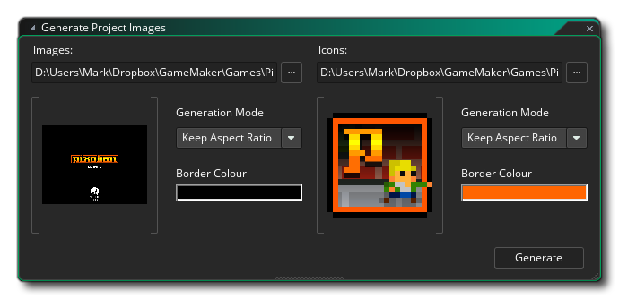

Le Project Image Generator est accessible à partir du menu Outils situé en haut de l'IDE de GameMaker Studio 2. Cet outil est conçu pour créer rapidement tous les différents écrans de démarrage, images promotionnelles et icônes qui sont requis par toutes les différentes plates-formes cibles à partir d'un seul ensemble d'images. Vous fournissez l'image de base et l'icône de base, puis cliquez sur le bouton Générer et vos options de jeu pour chaque plate-forme seront mises à jour avec les nouvelles images.
Pour que cela fonctionne correctement, vous devez fournir un écran de démarrage haute résolution et une image d'icône haute résolution. Les tailles recommandées seraient:
- Splash Screen: au moins 1920x1080px, ou 1080x1920px pour le portrait, et créé en tant que PNG 24 bits sans transparents.
- Icônes: au moins 1024x1024px (qui est la taille de l'icône la plus grande requise), et créé en tant que PNG 24 bits pouvant avoir des transparences
Une fois que vous avez fourni ces images, elles seront affichées dans les fenêtres de prévisualisation et vous pourrez ensuite définir le type d'ajustement à utiliser lors de leur application sur les différentes plates-formes. Vous pouvez choisir parmi les éléments suivants:
- Conserver le rapport d'aspect - cela permet d'ajuster l'image afin de conserver le rapport d'aspect et d'ajouter une couleur de fond pour remplir les côtés si l'ajustement n'est pas 1: 1
- Stretch To Fit ( Ajuster à la taille): cette option étire les images pour qu'elles s'adaptent à la taille de l'image / de l'icône.
- Recadrer pour ajuster - cela prendra l'image de base et la fera correspondre le mieux le long de l'axe horizontal ou vertical, puis recadrer le reste. Par exemple, si vous avez une image 640x480 qui doit être utilisé comme un écran d'accueil pour 480x800, l'image sera réduite à adapter l'axe vertical (480 -> 800) et le reste de l'image sera recadrée loin. De même, si vous avez une image de 1080x1920 qui doit s'adapter 800x800 alors l'image sera réduite pour tenir l'axe horizontal et le reste recadrée loin.
Vous pouvez également définir la couleur d'arrière-plan des icônes et des images. Cette couleur sera utilisée pour "tamponner" l'image lorsqu'elle est mise à l'échelle avec le rapport d'aspect. L'image suivante montre à quoi cela ressemblera une fois que tout aura été mis en place: 
Maintenant, tout ce que vous avez à faire est de cliquer sur Generate et GameMaker Studio 2 remplira tous les paramètres Image Game et Icon avec des images pour chaque plate-forme.